Float
| 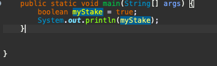 | We will get the output as "true" try it in your editor |
|---|
Java Data Types
| Data Type specifies the size and type of values that can be stored in an identifier. ... Data types in Java are classified into two types: Primitive which include Integer, Character, Boolean, and Floating Point. |
|---|
| Primitive Data Types. The eight primitives defined in Java are int, byte, short, long, float, double, boolean, and char – those aren't considered objects and represent raw values. |
|---|
| 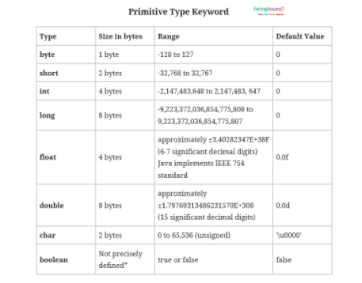 |
|---|
Non-Primitive Data Type
| Class, object, array, string, and interface are called non-primitive data types in Java. These data types are not predefined in Java. They are created by programmers. |
|---|
| 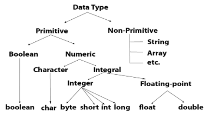 |
|---|
Long Data Type
| 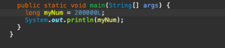 |
|---|
| Long (long integer) variables are stored as signed 32-bit (4-byte) numbers ranging in value from -2,147,483,648 to 2,147,483,647. The type-declaration character for Long is the ampersand (&). |
Floating Point Types
| The floating-point data type is a family of data types that act alike and differ only in the size of their domains (the allowable values). The floating-point family of data types represents number values with fractional parts. They are technically stored as two integer values: a mantissa and an exponent. |
|---|
Double Data Type
| 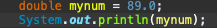 |
|---|
| The double data type is a double-precision 64-bit IEEE 754 floating point. Its range of values is beyond the scope of this discussion, but is specified in the Floating-Point Types, Formats, and Values section of the Java Language Specification. For decimal values, this data type is generally the default choice(Note that you should end the value with a "d":). |
Booleans
| In Java, the boolean keyword is a primitive data type. It is used to store only two possible values, either true or false. It specifies 1-bit of information and its "size" can't be defined precisely. ... Its default value is false. It is generally associated with conditional statements,and also we can only take the values as true or false: |
|---|
Character in java
| The char keyword is a data type that is used to store a single character. A char value must be surrounded by single quotes, like 'A' or 'c'. |
|---|
String
| Strings, which are widely used in Java programming, are a sequence of characters. In the Java programming language, strings are objects. The Java platform provides the String class to create and manipulate strings.By string literal : Java String literal is created by using double quotes. For Example: Strings Welcome |
|---|
Type Casting In Java
| Type casting is when you assign a value of one primitive data type to another type. In Java, there are two types of casting: Widening Casting (automatically) - converting a smaller type to a larger type size. byte -> short -> char -> int -> long -> float -> double. |
|---|
Widening Type Casting
| The process of conversion of a lower data type to a higher data type is known as Widening Typecasting,The process of conversion of higher data type to lower data type is known as narrowing typecasting.Java automatically performs this type of casting without any explicit code writing, which is why this type of casting is also known as Automatic typecasting,The process of conversion of higher data type to lower data type is known as narrowing typecasting. It is not done automatically by Java but needs to be explicitly done by the programmer, which is why it is also called explicit typecasting. |
|---|
| 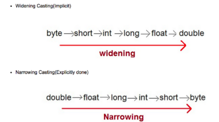 |
|---|
| The process of conversion of higher data type to lower data type is known as narrowing typecasting. It is not done automatically by Java but needs to be explicitly done by the programmer, which is why it is also called explicit typecasting |
Java String
| A Java string is a sequence of characters that exist as an object of the class java. ... Java strings are created and manipulated through the string class. Once created, a string is immutable -- its value cannot be changed. methods of class String enable: Examining individual characters in the string,also a String variable is Surrounded BY Double quotes. |
|---|
String Length
 |
|---|
| . The string length method returns the number of characters written in the String. This method returns the length of any string which is equal to the number of 16-bit Unicode characters in the string |
More String Methods
| 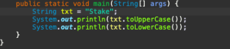 |
|---|
| . This course is designed to teach you the foundations in order to write simple programs in Python using the most common structures. No previous exposure to programming is needed,for example toUpperCase() and toLowerCase(). |
How to add String names
| 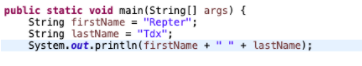 |
|---|
Java Operators
| . An operator, in Java, is a special symbols performing specific operations on one, two or three operands and then returning a result. ... The Java operators are classified into eight different categories: assignment, arithmetic, relational, logical, bitwise, compound assignment, conditional and type comparison operators |
|---|
How to add numbers
| 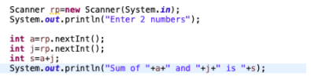 |
|---|
| . |
How to Subract
| 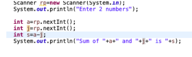 |
|---|
How to multiply
| 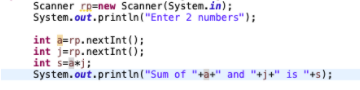 |
|---|
How to divide
| 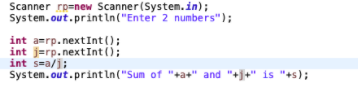 |
|---|
Java Math
| The Math class contains methods for finding the maximum or minimum of two values, rounding values, logarithmic functions, square root, and trigonometric functions (sin, cos, tan etc.). The Math is located in the java. lang package, and not in the java. math package. |
|---|
Math.Max(X,Y
| max() function is an inbuilt function in Java which returns maximum of two numbers. The arguments are taken in int, double, float and long. If a negative and a positive number is passed as argument then the positive result is generated. |
|---|
Math.sqrt(x)
| Math. sqrt() returns the square root of a value of type double passed to it as argument. If the argument is NaN or negative, then the result is NaN. If the argument is positive infinity, then the result is positive infinity. |
|---|
Math.abs(x)
| abs(int a) returns the absolute value of an int value. If the argument is not negative, the argument is returned. If the argument is negative, the negation of the argument is returned. MIN_VALUE, the most negative representable int value, the result is that same value, which is negative. . |
|---|
Random Numbers
| The Java Math. random() method is used to generate a pseudorandom number, which is a number created with a formula that simulates randomness. The pseudorandom number will be greater than or equal to 0.0 and less than 1.0. ... random is always between 0 and 1, and is a floating-point number. |
|---|
Java Booleans
| In Java, the boolean keyword is a primitive data type. It is used to store only two possible values, either true or false. It specifies 1-bit of information and its "size" can't be defined precisely. ... Its default value is false. It is generally associated with conditional statements. |
|---|
Java Booleans Expressions
| Expressions perform the work of a Java program. ... Definition: An expression is a series of variables, operators, and method calls (constructed according to the syntax of the language) that evaluates to a single value. |
|---|
Java If else
| The else statement is written after an if statement and has no condition. The else statement is optional and will execute only if the condition in the if statement evaluates to false. |
|---|
Java condtions and statements
| Java has the following conditional statements: Use if to specify a block of code to be executed, if a specified condition is true. Use else to specify a block of code to be executed, if the same condition is false. Use else if to specify a new condition to test, if the first condition is false. |
|---|
Example
| Less than: a < b Less than or equal to: a <= b Greater than: a > b Greater than or equal to: a >= b Equal to a == b Not Equal to: a != b |
|---|
If Satement
if = The Java if statement is the most simple decision-making statement. It is used to decide whether a certain statement or block of statements will be executed or not i.e if a certain condition is true then a block of statement is executed otherwise not
Else=Use else to specify a block of code to be executed, if the same condition is false. Use else if to specify a new condition to test, if the first condition is false.
Else if = Use else to specify a block of code to be executed, if the same condition is false. Use else if to specify a new condition to test, if the first condition is false. Use switch to specify many alternative blocks of code to be executed.
Switch=Use switch to specify many alternative blocks of code to be executed
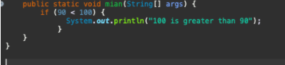
We can test variable too |
|---|
Else statement
| The else statement is written after an if statement and has no condition. The else statement is optional and will execute only if the condition in the if statement evaluates to false. |
|---|
Else if statement
| Java has the following conditional statements: Use if to specify a block of code to be executed, if a specified condition is true. Use else to specify a block of code to be executed, if the same condition is false. Use else if to specify a new condition to test, if the first condition is false. |
|---|
Short Hand If...Else (Ternary Operator)
| Java ternary operator is the only conditional operator that takes three operands. It's a one-liner replacement for the if-then-else statement and is used a lot in Java programming. We can use the ternary operator in place of if-else conditions or even switch conditions using nested ternary operators. |
|---|
Switch in Java(x)
| A Java switch statement is a multiple-branch statement that executes one statement from multiple conditions. The switch statement successively checks the value of an expression with a list of integer (int, byte, short, long), character (char) constants, String (Since Java 7), or enum types. |
|---|
Example
default keyword
| The default keyword the default block of code in a switch statement. The default keyword specifies some code to run if there is no case match in the switch. Note: if the default keyword is used as the last statement in a switch block, it does not need a break . |
|---|
break Keyword
| The break statement is used inside the switch to terminate a statement sequence. The break statement is optional. If omitted, execution will continue on into the next case. The default statement is optional and can appear anywhere inside the switch block. |
|---|
While Loop in Java
| Java while loop is a control flow statement that allows code to be executed repeatedly based on a given Boolean condition. The while loop can be thought of as a repeating if statement. While loop in Java comes into use when we need to repeatedly execute a block of statements. |
|---|

Example
What is the use of Loop?
| Loops can execute a block code until a certain condition is reached,Loops are handy because they save time, reduce errors and make the code more readable. |
|---|

The Do/While Loop
| The Java do-while loop is used to iterate a part of the program repeatedly, until the specified condition is true. If the number of iteration is not fixed and you must have to execute the loop at least once, it is recommended to use a do-while loop. Java do-while loop is called an exit control loop. |
|---|
For Loop in Java
| The “for” loop in Java is an entry-controlled loop that facilitates a user to execute a block of a statement(s) iteratively for a fixed number of times. The number of iterations depends on the test-condition given inside the “for” loop. The Java “for” loop is one of the easiest to understand Java loops. |
|---|
For each Loop in Java
| In Java, the for-each loop is used to iterate through elements of arrays and collections (like ArrayList). It is also known as the enhanced for loop. |
|---|
Java Break Statement
| When a break statement is encountered inside a loop, the loop is immediately terminated and the program control resumes at the next statement following the loop. The Java break statement is used to break loop or switch statement. It breaks the current flow of the program at specified condition. |
|---|
Continue in Java
| The Java continue statement stops one iteration in a loop and continues to the next iteration. This statement lets you skip particular iterations without stopping a loop entirely.The Java continue statement is used to skip the current iteration of a loop in Java. |
|---|
Break and continue in while loops
| Break leaves the loop completely and executes the statements after the loop. Whereas Continue leaves the current iteration and executes with the next value in the loop. |
|---|
Arrays in java
| Java Arrays. Normally, an array is a collection of similar type of elements which has contiguous memory location. Java array is an object which contains elements of a similar data type. ... Array in Java is index-based, the first element of the array is stored at the 0th index, 2nd element is stored on 1st index and so on. |
|---|
| Arrays are used to store multiple values in a single variable, instead of declaring separate variables for each value.To declare an array, define the variable type with square brackets: |
|---|
Elements of arrays
| The variables in the array are ordered, and each has an index beginning from 0. Java array can be also be used as a static field, a local variable, or a method parameter. The size of an array must be specified by int or short value and not long. The direct superclass of an array type is Object. |
|---|
How to change an array element
| Create a temp variable and assign the value of the original position to it. Now, assign the value in the new position to original position. Finally, assign the value in the temp to the new position. |
|---|
Length in array
| In Java, the array length is the number of elements that an array can holds. There is no predefined method to obtain the length of an array. ... We use this attribute with the array name. |
|---|
Loop through an Array
| Iterating over an array means accessing each element of array one by one. There may be many ways of iterating over an array in Java, below are some simple ways. Method 1: Using for loop: This is the simplest of all where we just have to use a for loop where a counter variable accesses each element one by one. |
|---|
Loop Through an Array with For-Each
| The forEach method is also used to loop through arrays, but it uses a function differently than the classic "for loop". The forEach method passes a callback function for each element of an array together with the following parameters: Current Value (required) - The value of the current array element. |
|---|
Multidimensional Arrays
| In Java, a multi-dimensional array is nothing but an array of arrays. 2D array − A two-dimensional array in Java is represented as an array of one-dimensional arrays of the same type. Mostly, it is used to represent a table of values with rows and columns − Int[][] myArray = {{10, 20, 30}, {11, 21, 31}, {12, 22, 32} }. |
|---|
Example
| Congratulations you have been learned Java. |
|---|
| Thankyou |
|---|